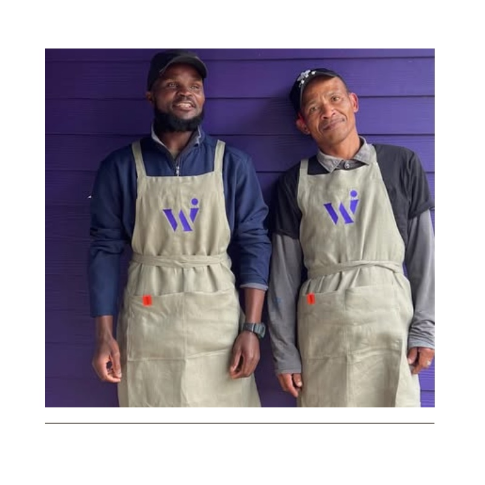
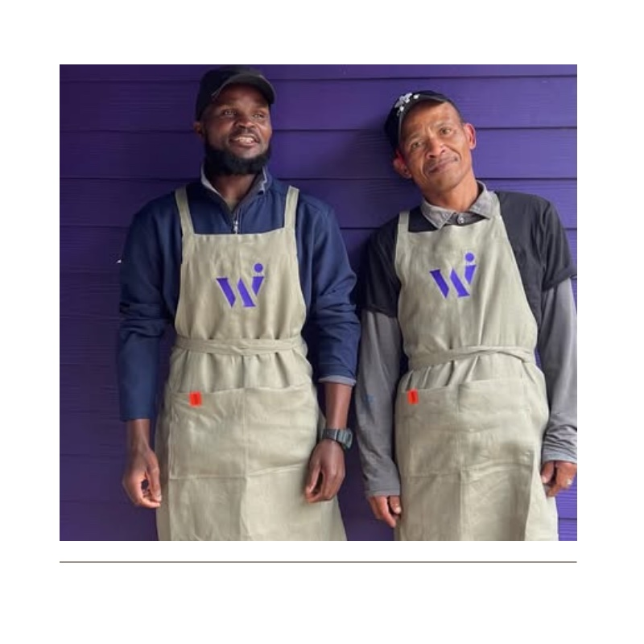

There's a particular kind of interior design practice that doesn't advertise, doesn't chase trends, and doesn't need to explain itself. The Workshop Interiors, tucked into the corner of Main and Nelson in Knysna, is that kind of place.
For more than twenty years, Tanya Mans has been building something rare in the design world: a business based almost entirely on reputation. Walk into any beautifully finished home on the Garden Route—from the forest estates above Knysna to the clifftop properties of Plett—and there's a reasonable chance The Workshop had a hand in it.
The name tells you something. This isn't a showroom that exists to display; it's a workshop that exists to make. Behind the fabric samples and the furniture on the floor, there's a workroom where curtains are sewn, upholstery is done, and custom pieces come together. That integration of design and craft—the ability to conceive something and then actually build it—is increasingly rare in an age of outsourcing and offshore production.
The Coastal Challenge
Interior design on the Garden Route presents problems that designers in Johannesburg or Cape Town never encounter. The salt air corrodes metal fittings and eats into fabrics. The humidity warps timber and swells drawers shut. The UV light—intense and relentless—fades fabrics in months rather than years. The famous southeaster finds its way through the smallest gaps, depositing fine sand on freshly upholstered surfaces.
Two decades of working in this environment has given The Workshop institutional knowledge that simply can't be replicated. They know which fabrics will survive a beachfront lounge and which will disintegrate within a season. They know which timber moves least in our humidity. They know which suppliers actually deliver on their promises, and which ones don't. This accumulated wisdom—passed down through the team, encoded in fabric books and supplier lists—is worth more than any design degree.
"The best design is invisible. You shouldn't notice the curtains or the upholstery—you should just feel that the room works."
The Approach
What distinguishes The Workshop is an absence of signature style. Some designers impose a look—you can spot their work from across the room, the same palette repeated, the same aesthetic applied regardless of context. Tanya and her team take the opposite approach: each project responds to its specific context, its clients, its views, its light.
A beachfront property in Plett demands different solutions than a forest retreat above Knysna. A young family's needs differ from those of a retired couple. The Workshop's job isn't to express their own aesthetic; it's to understand their clients' lives and create spaces that make those lives better.
 

The result is homes that feel inevitable rather than designed. Spaces where the ocean view isn't competing with the furniture for attention. Rooms that work equally well for a quiet morning coffee and a dinner party for twenty. There's a restraint to good interior design—knowing when to step back, when to let the architecture and the landscape do the talking. The Workshop has mastered that restraint.
The Work
The Workshop offers the full spectrum of interior services: curtains and blinds, upholstery and reupholstery, furniture selection and custom pieces, full interior design and project management. They work on everything from complete new builds to simple refresh projects. But they're equally happy to simply recover a beloved chair or source a particular fabric for a client who knows exactly what they want.

That flexibility—the willingness to do small jobs as carefully as large ones—is part of how they've built their reputation. In a town where word travels fast, every job matters. The curtains you make for a guest bedroom might lead to a complete house renovation. The chair you reupholster might belong to someone building a new home next year. The Workshop treats every project, regardless of scale, as an opportunity to demonstrate what careful, considered design can achieve.
The Legacy
Since 2004, The Workshop has been part of the fabric of Knysna—quite literally, given the thousands of metres of fabric that have passed through their workroom. They've watched the town change, seen trends come and go, adapted to new materials and techniques while holding fast to the fundamentals of good craftsmanship.
Their client list reads like a who's who of Garden Route property: some of the most beautiful homes in the region bear their fingerprints. Yet you won't find The Workshop name anywhere on these properties. The best interior design, like the best hospitality, is invisible. You don't notice the work that went into it; you simply enjoy the result.
In an industry that often prioritises visibility over substance, The Workshop has chosen a different path. They've built their business the old-fashioned way: by doing excellent work, treating clients well, and letting the results speak for themselves. Twenty years on, that approach has proven more durable than any trend.
Visiting
Location: Corner of Main Road and Nelson Street, Knysna Central
Hours: Monday to Friday, 7:30am – 5pm
Services: Interior design, curtains & blinds, upholstery, custom furniture, project management
Contact: 044 382 6664
Note: Walk-ins welcome for browsing; appointments appreciated for design consultations